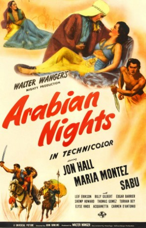
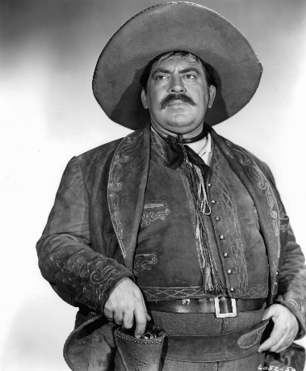
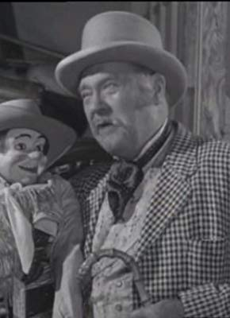
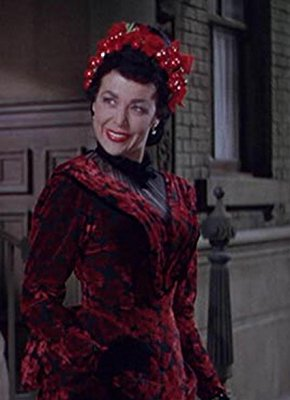

#7924 Arabische Nächte
Alternativ: Arabian Nights
Auszeichnungen: für 4 Oscars nominiert
 
 IMDB-Wertung: 6.2 / 10
IMDB-Wertung: 6.2 / 10  Metascore: 0
Metascore: 0 
Dancer Sherazade was told by the stars that she will become wife of the kalif in Bagdad. She tells Kamar, brother of kalif Haroun. He planned a coup d'etat, which failed at first, but supported by the wasir he finally succeeds. Haroun is injured and gets help from Ahmad's actor troupe, where he is nursed by Sherazade, who doesn't recognise him. When she hears that Kamar is looking for her she goes to him, but is sold with the complete troupe of actors to slavery. They're able to escape, but Haroun is still in danger. To save him, Sherazade agrees to poison Kamar, but Haroun tries to establish his rulership first.
Jahr: 1942
Dauer: 86 Minuten
FSK: 12
Land: USA Studio: Universal PicturesTonspuren:
Untertitel: Deutsch,
Auflösung: 1080p (1472x1080) Größe: 6707 MB
Genre: Action, Abenteuer
Regisseur: John Rawlins
Drehbuch: Michael Hogan
Soundtrack: Frank Skinner
Darsteller:
- Jon Hall als Haroun-Al-Raschid
- Maria Montez als Sherazade
- Sabu als Ali Ben Ali
 Leif Erickson als Kamar
Leif Erickson als Kamar Billy Gilbert als Ahmad
Billy Gilbert als Ahmad- Edgar Barrier als Nadan
- Richard Lane als Corporal
- Turhan Bey als Captain
 John Qualen als Aladdin
John Qualen als Aladdin- Shemp Howard als Sinbad
- William 'Wee Willie' Davis als Valda
-  Thomas Gomez als Hakim
- Robert Greig als Eunuch
-  Emory Parnell als Harem Sentry
 Harry Cording als Blacksmith
Harry Cording als Blacksmith- Robin Raymond als Slave Girl
- Carmen D'Antonio als Harem Girl
- Acquanetta als Ishya (uncredited)
- Robert Barron als Bidder (uncredited)
- Linda Brent als Harem Girl (uncredited)
 Lane Chandler als Majordomo (uncredited)
Lane Chandler als Majordomo (uncredited)- Virginia Engels als Harem Girl (uncredited)
- Frances Gladwin als Harem Girl (uncredited)
- Jamiel Hasson als Officer (uncredited)
- Elyse Knox als Slave Girl (uncredited)
- Frank Lackteen als Bidder (uncredited)
- Murdock MacQuarrie als Bidder (uncredited)
 Kermit Maynard als Guard (uncredited)
Kermit Maynard als Guard (uncredited)-  Suzanne Ridgway als Harem Girl (uncredited)
- Nick Thompson als Bearded Bidder (uncredited)
- Jeni Le Gon als Dresser
- Charles Coleman als Eunuch
- Adia Kuznetzoff als Slaver
- Carlos Alvarado als Officer (uncredited)
- Daniel Barone als Tumbler (uncredited)
- John Berkes als Blind Beggar (uncredited)
- Anthony Blair als Bidder (uncredited)
- André Charlot als Bidder (uncredited)
- Ken Christy als Provost Marshal (uncredited)
- Paul Clayton als Black Boy (uncredited)
- Rosemary Dempsey als Harem Girl (uncredited)
- June Ealey als Harem Girl (uncredited)
- Phyllis Forbes als Virgin (uncredited)
- Amador Gutierrez als Tumbler (uncredited)
- Eloise Hardt als Virgin (uncredited)
- Al Haskell als Bearded Bidder (uncredited)
- Cordell Hickman als Black Boy (uncredited)
- Patsy Mace als Harem Girl (uncredited)
- Edward Marmolejo als Tumbler (uncredited)
- Kathleen McCormack als Harem Girl (uncredited)
Datei: X:\1900-1949\Arabische Nächte (1942, FSK12, 1472x1080).mkv seit 07.01.2018
Festplatte: HD 1900-1970
 Es gibt insgesamt 80 Filme in der Gruppe '1900-1949'
Es gibt insgesamt 80 Filme in der Gruppe '1900-1949'